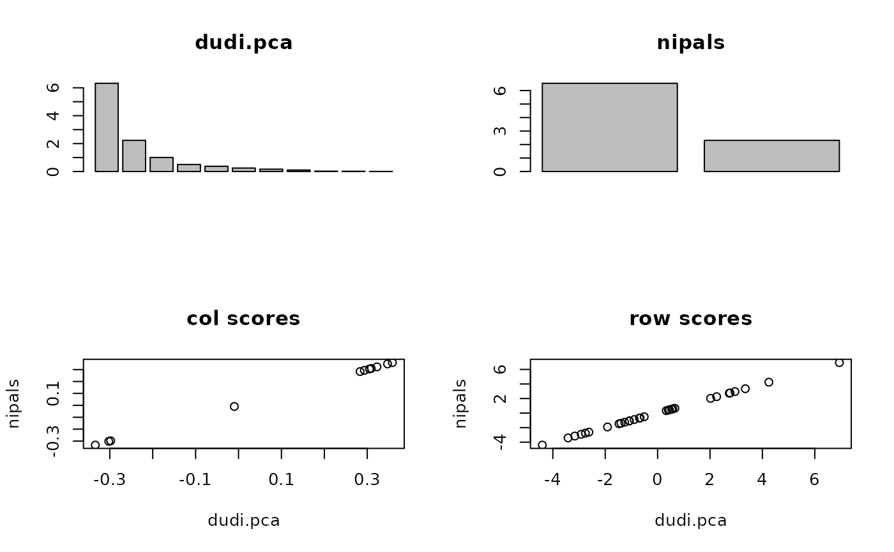

Non-linear Iterative Partial Least Squares (NIPALS) algorithm
nipals.RdThis function performs NIPALS algorithm, i.e. a principal component analysis of a data table that can contain missing values.
Arguments
- df
a data frame that can contain missing values
- nf
an integer, the number of axes to keep
- rec
a logical that specify if the functions must perform the reconstitution of the data using the
nfaxes- niter
an integer, the maximum number of iterations
- tol
a real, the tolerance used in the iterative algorithm
- x
an object of class
nipals- xax
the column number for the x-axis
- yax
the column number for the y-axis
- clab.row
a character size for the rows
- clab.col
a character size for the columns
- posieig
if "top" the eigenvalues bar plot is upside, if "bottom" it is downside, if "none" no plot
- sub
a string of characters to be inserted as legend
- ...
further arguments passed to or from other methods
Value
Returns a list of classes nipals:
- tab
the scaled data frame
- eig
the pseudoeigenvalues
- rank
the rank of the analyzed matrice
- nf
the number of factors
- c1
the column normed scores
- co
the column coordinates
- li
the row coordinates
- call
the call function
- nb
the number of iterations for each axis
- rec
a data frame obtained by the reconstitution of the scaled data using the
nfaxes
References
Wold, H. (1966) Estimation of principal
components and related models by iterative least squares. In
P. Krishnaiah, editors.Multivariate
Analysis, Academic Press, 391–420.
Wold, S., Esbensen, K. and Geladi, P. (1987) Principal component analysis Chemometrics and Intelligent Laboratory Systems, 2, 37–52.
Author
Stéphane Dray stephane.dray@univ-lyon1.fr
Examples
data(doubs)
## nipals is equivalent to dudi.pca when there are no NA
acp1 <- dudi.pca(doubs$env, scannf = FALSE, nf = 2)
nip1 <- nipals(doubs$env)
if(adegraphicsLoaded()) {
if(requireNamespace("lattice", quietly = TRUE)) {
g1 <- s1d.barchart(acp1$eig, psub.text = "dudi.pca", p1d.horizontal = FALSE, plot = FALSE)
g2 <- s1d.barchart(nip1$eig, psub.text = "nipals", p1d.horizontal = FALSE, plot = FALSE)
g3 <- lattice::xyplot(nip1$c1[, 1] ~ acp1$c1[, 1], main = "col scores", xlab = "dudi.pca",
ylab = "nipals")
g4 <- lattice::xyplot(nip1$li[, 1] ~ acp1$li[, 1], main = "row scores", xlab = "dudi.pca",
ylab = "nipals")
G <- ADEgS(list(g1, g2, g3, g4), layout = c(2, 2))
}
} else {
par(mfrow = c(2, 2))
barplot(acp1$eig, main = "dudi.pca")
barplot(nip1$eig, main = "nipals")
plot(acp1$c1[, 1], nip1$c1[, 1], main = "col scores", xlab = "dudi.pca", ylab = "nipals")
plot(acp1$li[, 1], nip1$li[, 1], main = "row scores", xlab = "dudi.pca", ylab = "nipals")
}

if (FALSE) { # \dontrun{
## with NAs:
doubs$env[1, 1] <- NA
nip2 <- nipals(doubs$env)
cor(nip1$li, nip2$li)
nip1$eig
nip2$eig
} # }